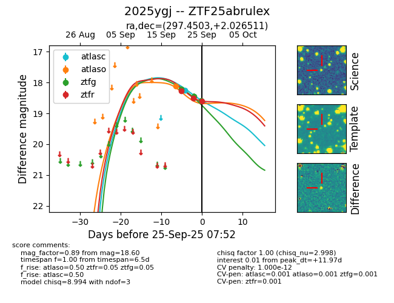

FINK: ZTF25abrulex
Lasair: ZTF25abrulex
ALeRCE: ZTF25abrulex
TNS: 2025ygj
YSE: 2025ygj
ZTF25abrulex (ztf,fink)
2025ygj (tns,yse)
equatorial (ra, dec) = (297.4503,+2.02651)
galactic (l, b) = (41.5320,-12.00144)

last atlasc=18.25, atlaso=18.11, ztfg=18.21, ztfr=18.27
1 atlasc, 1 atlaso, 1 ztfg, 1 ztfr detections